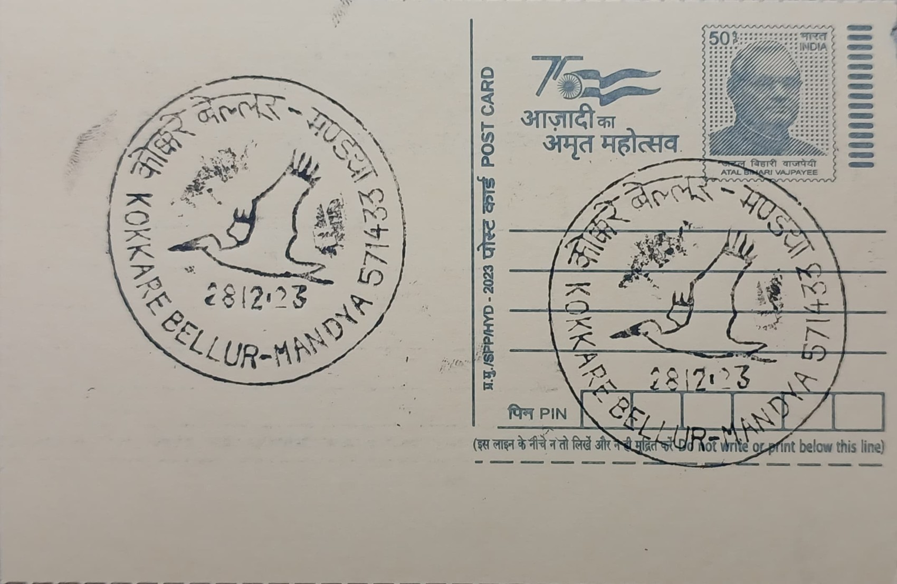

Spot-Billed Pelican
ಚುಕ್ಕೆ ಕೊಕ್ಕಿನ ಪೆಲಿಕನ್


The village from which this post office takes its name owes its identity to the birds themselves: Kokkare Bellur, in Kannada, translates roughly to "the hamlet of storks," with "kokkare" being the local term for the painted stork that nests here alongside the spot-billed pelican. Village tradition holds that the birds have bred at this site for well over a century, and local accounts describe the settlement itself relocating a few kilometres inland after a plague outbreak around 1916 forced residents away from their original site on the banks of the Shimsha river, with the nesting colonies following the villagers to their new location rather than remaining behind.
The spot-billed pelican (Pelecanus philippensis) is a large waterbird, typically 125 to 152 centimetres in length and weighing between roughly 4 and 6 kilograms, recognised by the dull yellow-orange spotting on its lower mandible pouch, which it uses to scoop fish while swimming at the surface of lakes and wetlands. Classified as Near Threatened on the IUCN Red List after being downlisted from Vulnerable in 2007 once surveys showed the species was more widespread than earlier believed, it nevertheless remains dependent on a shrinking network of large freshwater lakes across southern Asia, making the Mandya district's breeding colonies, including the one in Kokkare Bellur, ecologically significant well beyond the state.
Each year, from roughly December through June, hundreds of spot-billed pelicans and painted storks arrive from lakes across southern Karnataka and neighbouring districts to build nests of heaped twigs and vegetation directly in tamarind, banyan and other large trees standing within the village itself, rather than in a remote or restricted forest area. Clutches typically number three to four eggs, and the birds share the same canopy space with human households below, a degree of physical proximity between a wild breeding colony and a residential settlement that is unusual among India's documented bird colonies and has made the site a long-running subject of study for ornithologists examining colony size, nesting success and the effect of sustained human presence on breeding waterbirds.
In 2007, in recognition of this relationship, Kokkare Bellur was declared a community reserve under the Wildlife Protection Act, making it the only such community-protected sanctuary of its kind in Karnataka at the time; the designation formalised a conservation arrangement that had, until then, rested almost entirely on local custom and the willingness of villagers to tolerate droppings, noise and damaged branches in exchange for the birds' presence, which many residents regard as auspicious.
Conservation groups working with the community have since trained local volunteers in bird rescue and chick care, planted additional nesting trees to expand roosting capacity, and run a small interpretation centre that introduces visiting researchers, students and birdwatchers to the site's history and its dual role as both a residential village and an Important Bird Area recognised by BirdLife International. The reserve today is managed jointly by the Karnataka Forest Department and village-level committees, whose coordination is what keeps the colony and its human neighbours operating on the same patch of ground season after season.
| Date of Introduction | January 28, 1992 |
|---|---|
| Address | Branch Postmaster, |
| Kokkare Bellur BO, | |
| Mandya (dt.), Karnataka - 571433. |